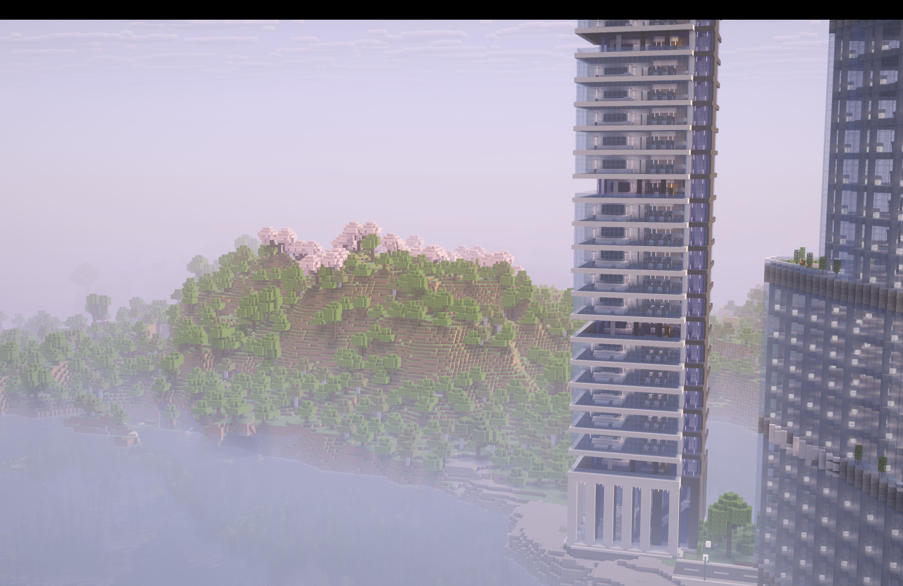
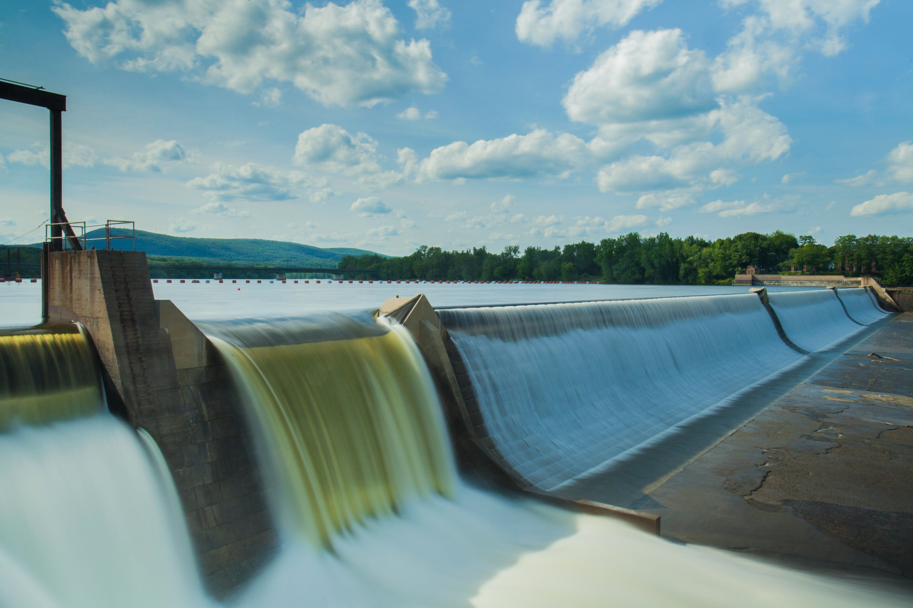

Resources
Explore valuable tools and information to help you navigate Framstad's offerings.

Explore valuable tools and information to help you navigate Framstad's offerings.
First, is hydropower because there’s a lot of mountains and valleys which cause elevation differences. And there’s rivers all across the country, which creates a lot of hydropower.
Second, is oil and fossil fuels, Framstad has always been one of the most fossil fuel rich countries in the world, but for sustainable development Framstad doesn’t use them, instead, we sell them for a small amount of money.
Third, is fisheries, because we have both lakes and oceans, both salt water and clean water. Fourth, is forestry, in the State of Midtland, almost everywhere is heavily-forested.
Finally, are the minerals–-iron, copper, zinc, tungsten, and phosphate.

-> Hydropower: because of elevation differences and a large amount of rivers and water resources.
-> Fossil fuels: (natural gas) –Framstad and Norway is one of the richest fossil fuel countries, but for sustainability, the percentage of power source for Framstad is less than 10%.
-> Wind: Suitable for coastal areas, only for some extra power supply uses, less than 5%.
Mountain range: Formed by an ancient continental collision around 400M years ago!
Lowland: Formed By glaciation and ocean
Fjord: Because the glaciations disappeared after the ice age, allows water to go in and flood the bottom of the valley.